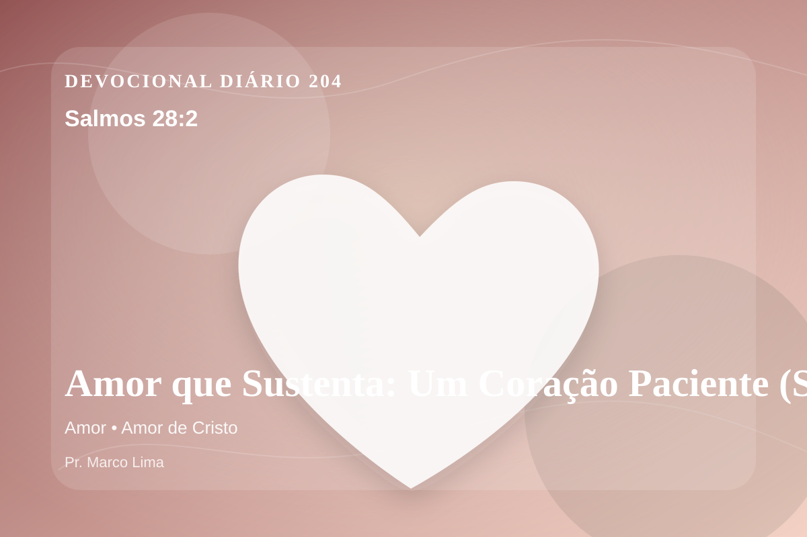

Amor que Sustenta: Um Coração Paciente (Salmos 28:2)
Ouve a voz de minhas súplicas, quando eu clamar a ti, ao levantar às minhas mãos ao templo de tua santidade.
Pensamento
Hoje, a ênfase está em como esta Palavra alcança decisões pequenas, silenciosas e reais. Salmos 28:2 coloca diante de nós uma verdade capaz de atravessar a rotina, confrontar o coração e renovar a esperança em Deus.
Salmos 28:2 chama o coração a ouvir Deus com reverência e responder com fé prática. A Palavra não foi dada para enfeitar pensamentos religiosos, mas para conduzir pessoas reais ao Senhor.
O tema de amor precisa ser recebido com simplicidade e seriedade. O Senhor não usa esta passagem para alimentar vaidade espiritual, mas para formar obediência sincera. O amor bíblico não é apenas afeto, mas decisão santa que reflete o caráter de Deus. Ele aparece nas Escrituras como entrega, paciência, serviço e fidelidade, tendo em Cristo sua expressão mais perfeita.
Não transforme este devocional em informação religiosa. Pare por alguns instantes, nomeie diante de Deus aquilo que precisa mudar e peça um coração pronto para obedecer.
Arrependimento não é apenas sentir peso na consciência; é voltar-se para Deus, abandonar o caminho que entristece o Senhor e confiar que a graça de Cristo é suficiente para perdoar e transformar.
Este é o evangelho que sustenta toda aplicação: Jesus Cristo morreu pelos pecadores, ressuscitou em vitória e chama cada pessoa a responder com fé, arrependimento e uma vida rendida ao Seu senhorio.
O simples evangelho de Cristo Jesus continua sendo suficiente: arrependa-se, creia, receba perdão e caminhe em obediência pelo poder do Espírito Santo.
Não espere sentir tudo para obedecer. Comece com fidelidade no próximo passo, confiando que Deus sustenta quem responde à Sua voz.
Para Praticar Hoje
- Leia Salmos 28:2 lentamente e destaque uma palavra ou expressão central do texto.
- Confesse a Deus um pecado, resistência ou frieza espiritual que esta Palavra revelou.
- Declare sua fé em Jesus Cristo e pratique hoje uma atitude concreta de arrependimento e obediência.
Oração
Senhor, onde há mágoa que impede de amar, sara. Onde há ressentimento, liberta. Salmos 28:2 me ensina que o amor de Deus foi derramado em nosso coração. Que eu ame como Cristo amou: com entrega total. Guarda-me perto de Jesus.
{kind=link}